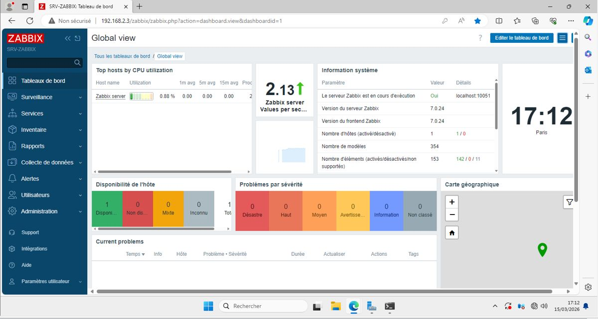

BTS · SISR
Supervision réseau avec Zabbix 7.0
Superviser un contrôleur de domaine et un pare-feu depuis un serveur Zabbix installé manuellement.
- Zabbix 7.0
- Ubuntu 24.04
- MariaDB
- pfSense
- Windows Server
Contexte
Mettre en place une supervision centralisée pour détecter les pannes et suivre l'état des équipements.
Résultat
Serveur Zabbix opérationnel, hôtes DC1 et pfSense supervisés avec leurs modèles, communication validée.
Étapes de réalisation
- Serveur. Ubuntu Server 24.04, IP statique, mises à jour.
- Installation. Dépôt officiel Zabbix 7.0, serveur, interface web, agent et MariaDB.
- Base de données. Création de la base (utf8mb4) et d'un utilisateur dédié, import du schéma.
- Services. Configuration du serveur et activation des services au démarrage, puis assistant web.
- Agent pfSense. Paquet Zabbix Agent et règle de pare-feu pour le port 10050.
- Hôtes. Création des hôtes et application des modèles Windows et FreeBSD.
Captures



Compétences
- Supervision
- Linux
- Bases de données
- Pare-feu